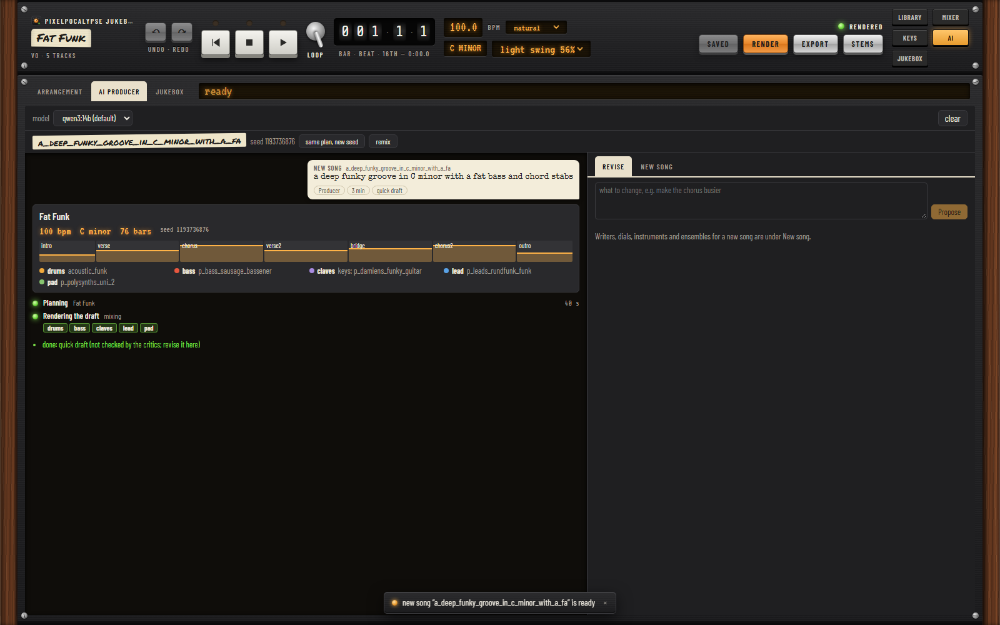

A song from a sentence
Describe the song: a genre, a mood, a tempo, an instrument, a shape ("start sparse, build to a huge chorus"). The AI producer plans it and you watch each step happen: the plan card with tempo, key, sections and sounds, every track rendering, the critics' findings and what each fix changed.
- 16 writers to choose from, each with their own drums, chords and habits.
- Dials for mood, speed and shape, or no prompt at all: a fresh idea from the dials.
- Quick drafts skip the critics and are playable in a minute or two.
- Takes: ask for several at once and keep the one you like.

Ask for changes
Say what to change in the open song ("make the chorus bigger", "sparser drums in the intro"). The answer comes back as a map of the tracks and sections it touches, with each change listed, to accept or reject.
Accepted changes render only the parts they touched, and undo takes any of them back.

Critics that listen
After every render, critics measure the audio: loudness of each section against the plan's energy, each track's level against its target, kick against bass, the notes heard against the notes written, and whether every part fits the key. When something fails, they tell the planner what to fix, for up to three rounds.
The critics' rounds window shows every number, its limit, and what it was the round before.

The jukebox
Pick a mood, add a line if you like ("lots of bass, no vocals"), and press Start. It keeps writing and playing new songs until you stop it, with a different writer, length and idea each time, and the next song always being made while this one plays.
Name a channel and it learns from the songs you star in it. Anything in the history can be copied into your songs to edit.